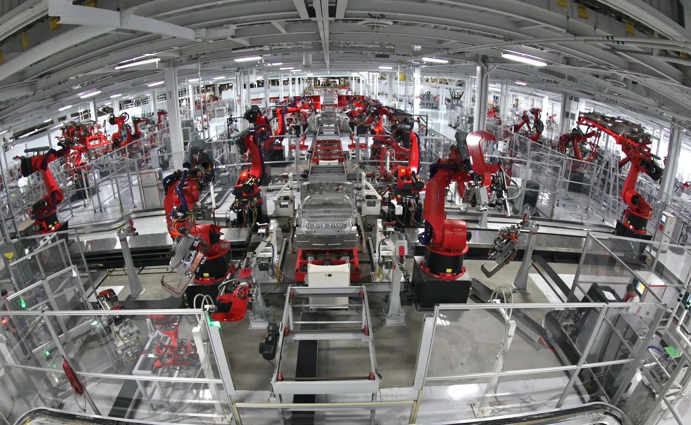
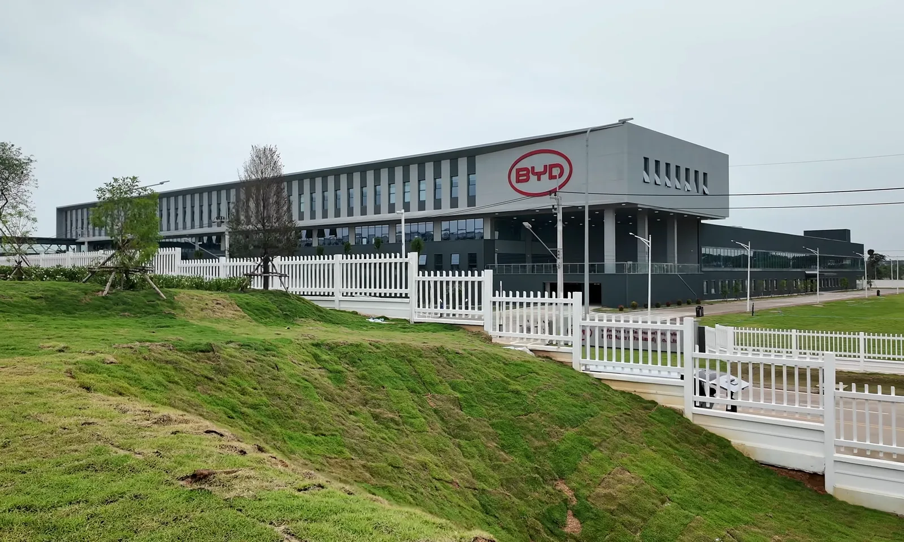
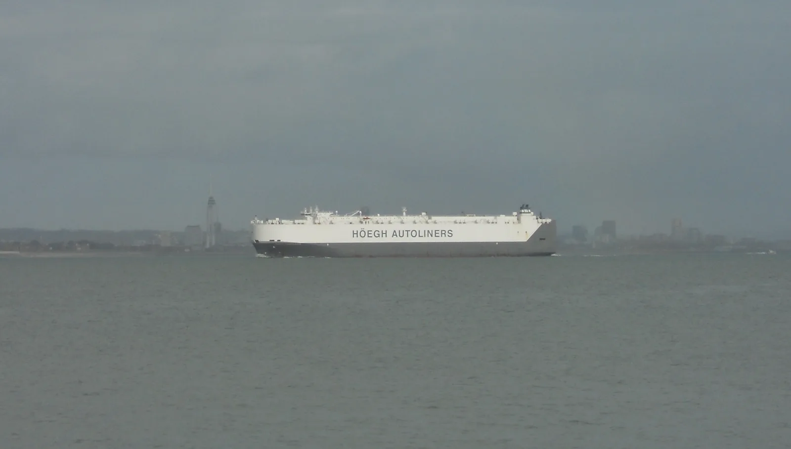
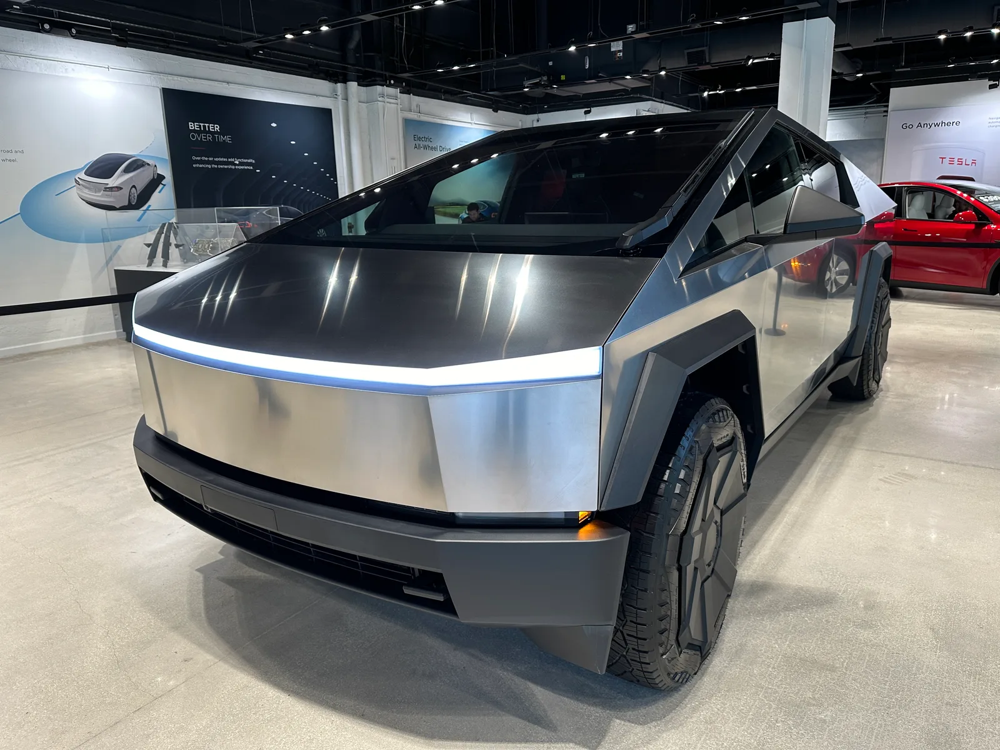

▲ 완성차업체의 수익성은 결국 공장 가동률과 원가 구조에서 갈린다 ⓒ Marek Ślusarczyk (Wikimedia Commons, CC BY 3.0)
불과 1년 사이 완성차업체들의 수익성이 눈에 띄게 얇아졌다. 업계 분석기관들이 집계한 글로벌 완성차업체(OEM) 평균 EBITDA(이자·세금·감가상각전이익) 마진은 2024년 3분기 약 11% 수준에서 2025년 3분기 8% 미만으로 떨어진 것으로 알려졌다. 원자재값 상승과 관세, 판매 정체가 동시에 덮치면서 '만들수록 남는 게 줄어드는' 구조가 굳어지고 있다는 진단이다.
스텔란티스·GM 등 개별 업체의 주가 변동이나 개별 전략 이슈와는 별개로, 업계 전반의 수익 구조 자체가 흔들리고 있다는 점이 이번 분석의 핵심이다.
1. 11%에서 8%로 — 숫자로 보는 수익성 급락
PwC의 오토팩트(Autofacts) 시장 분석에 따르면, 글로벌 완성차업체의 연간 EBITDA 마진 평균은 2024년 3분기 약 11% 수준에서 2025년 3분기 8% 미만으로 낮아진 것으로 알려졌다. EBITDA 마진은 이자·세금·감가상각비를 제외하기 전 영업 현금창출력을 매출로 나눈 지표로, 설비투자 부담이 큰 완성차 산업의 '기초 체력'을 가늠하는 핵심 잣대로 쓰인다.
| 지표 | 2024년(동기) | 2025년(동기) | 출처 |
|---|---|---|---|
| 글로벌 OEM 평균 EBITDA 마진(3분기 기준) | 약 11% | 8% 미만 | PwC 오토팩트 |
| 9대 완성차업체 평균 EBIT 마진(1~3분기 누적) | 7.8% | 5.5% | 독일 CAM 연구소 |
| 글로벌 완성차 평균 EBITDA 마진(연간) | 11%(2023년) | 9.8%(2024년) | AlixPartners |
| 중국 자동차산업 평균 마진(1~11월 누적) | - | 4.4% | 중국 정부 통계 기반 집계 |
수치의 출처와 집계 방식은 기관마다 조금씩 다르지만, 방향성은 뚜렷하게 일치한다 — 완성차업계의 수익성은 지난 1~2년 사이 꾸준히, 그리고 비교적 가파르게 악화돼 왔다는 점이다. 독일 자동차경영센터(CAM)의 집계에서는 9대 대형 완성차업체의 2025년 1~3분기 누적 영업이익이 전년 동기 대비 29% 줄어든 것으로 나타났다.

▲ 자동화 설비 투자가 늘수록 감가상각 부담도 함께 커진다 — EBITDA는 이 부담을 걷어낸 '순수 현금창출력'을 보여주는 지표다 ⓒ Steve Jurvetson (Wikimedia Commons, CC BY 2.0)
2. 원가·관세·물류 — 비용 쪽에서 무슨 일이 있었나
마진 하락의 첫 번째 축은 비용 상승이다. PwC 분석은 이번 EBITDA 마진 급락의 배경으로 정체된 판매 물량, 원자재·반도체 등 투입원가 상승, 그리고 늘어난 물류·관세 비용을 꼽았다. 여기에 신형 파워트레인 관련 보증충당금과 리콜 비용, 새로운 생산 공정 확장에 따른 초기 비용도 마진을 갉아먹는 요인으로 지목됐다.
✅ 비용 측면 압박 요인 정리
· 관세 — 미국의 대(對) 수입차·부품 관세 확대로 공급망 전반의 원가 부담 상승
· 원자재·부품비 — 철강·배터리 소재 등 투입원가 변동성 지속
· 물류비 — 글로벌 해상운임 및 공급망 재편 비용 증가
· 보증·리콜 충당금 — 신형 전동화 파워트레인 관련 품질 이슈 대응 비용
· 신공정 전환비용 — 새로운 생산라인·설비 도입에 따른 초기 비효율
📍 판매가는 올랐는데 마진은 왜 떨어질까
미국 시장 기준으로 신차 평균 거래가격은 사상 최고 수준으로 알려져 있다. 그럼에도 마진이 떨어지는 것은 판매가 상승분보다 원가·관세·충당금 등 비용 증가분이 더 빠르게 늘었기 때문이라는 분석이 나온다. 즉 '비싸게 팔지만 남는 건 적어지는' 구조다.
3. 중국 시장 — 정책 지원 축소와 '적자 판매' 가격전쟁의 후폭풍
지역별로 보면 중국의 타격이 가장 두드러진다. 중국 자동차산업의 평균 마진은 2025년 1~11월 누적 기준 4.4%까지 떨어져, 역대 두 번째로 낮은 수준을 기록한 것으로 전해졌다. 차량 한 대당 평균 매출은 32만 2000위안(약 4만 5800달러) 수준이었지만, 대당 매출총이익은 1만 4000위안(약 2000달러)에 그쳤다는 집계도 있다.
업계에서는 수년간 이어진 전기차 보조금·정책 지원이 서서히 축소되면서, 완성차업체들이 내수 시장의 치열한 가격 경쟁에 그대로 노출됐다는 분석이 나온다. 일부 업체는 원가 이하로 차량을 판매해온 것으로 알려졌으며, 중국 정부가 이런 '출혈 판매'를 제한하는 법 개정에 나선 배경이기도 하다. BYD의 2025년 순이익은 전년 대비 19% 감소했고, 국영 완성차업체 GAC그룹은 2025년 약 87억 8000만 위안(약 12억 달러)의 연간 순손실을 내며 2010년 상장 이후 처음으로 적자 전환한 것으로 전해졌다.

▲ BYD는 해외 생산기지(사진은 태국 라용 공장)까지 늘리며 몸집을 키웠지만, 정작 중국 내수에서는 가격전쟁 여파로 2025년 순이익이 19% 줄었다 ⓒ iMoD Official (Wikimedia Commons, CC BY 3.0)
📍 중국은 마진보다 점유율을 택했다
AlixPartners 분석은 중국 완성차업체들이 수익성보다 시장점유율 확대를 우선시하는 전략을 선택해왔다고 진단한다. 그 결과 중국 업체의 평균 EBITDA 마진(5.2%)은 미국 업체(7.7%)와 유럽 업체(10.2%)보다 낮은 수준으로 알려졌지만, 과잉 생산능력에 따른 업계 재편 압력도 함께 커지고 있다.
4. 미국 시장 — 관세 부담과 EV 세액공제 종료 겹악재
미국 시장의 수익성 압박은 정책 변수와 소비 심리가 동시에 작용한 결과로 풀이된다. 2025년 한 해 동안 신설된 관세로 인한 업계 전체 비용 부담은 상당한 규모에 이르는 것으로 추산되며, 이에 따라 다수의 미국 기업이 공급망을 중국 밖으로 재배치하는 방안을 검토 중인 것으로 전해졌다.

▲ 관세와 물류비 변화는 완성차업체의 수출·공급망 전략에 직접 영향을 미친다 ⓒ ITookSomePhotos (Wikimedia Commons, CC BY-SA 4.0)
동시에 연방 전기차 세액공제(대당 최대 7500달러)가 2025년 9월 30일 종료된 이후 4분기 EV 수요가 눈에 띄게 둔화된 것으로 나타났다. 미국 월간 EV 판매 대수는 세액공제 종료 직전인 9월 9만 8000여 대에서 10월 7만 5000대 수준으로 한 달 새 24%가량 급감했고, 11월에는 전년 동월 대비 40% 넘게 줄어든 것으로 집계됐다. 여기에 신차 평균 거래가격이 5만 달러를 넘어서는 등 소비자 체감 구매 부담도 커지면서, 완성차업체 입장에서는 '가격을 더 올리기도, 판매량을 늘리기도 어려운' 이중고에 놓였다는 평가가 나온다.

▲ 연방 EV 세액공제가 끝난 뒤 미국 월간 EV 판매량은 한 달 만에 24%나 급감했다 ⓒ Phillip Pessar (Wikimedia Commons, CC BY 2.0)
✅ 미국 시장 마진 압박 요인
· 관세 비용 — 수입 부품·완성차에 부과되는 관세 부담 확대
· EV 세액공제 종료 — 연방 보조금 종료 이후 EV 수요 둔화
· 소비자 구매 여력 축소 — 신차 평균가 상승과 금리 부담으로 체감 구매력 하락
· 진입가격대 차종 타격 — 저가형 차종일수록 해외 생산 비중이 높아 관세 영향 집중
5. 어떤 업체가 특히 취약한가 — 구조적 요인
이번 마진 하락은 특정 한두 업체만의 문제가 아니라 업계 구조 전반에 걸친 흐름이라는 데 분석기관들의 공감대가 있다. 다만 상대적으로 더 큰 압박을 받는 유형은 있다.
- 내연기관·전기차 라인업을 동시에 운영해야 하는 업체 — 두 파워트레인 모두에 투자해야 해 고정비 부담이 이중으로 발생
- 다(多)브랜드·다(多)플랫폼 구조를 가진 대형 그룹 — 플랫폼이 파편화될수록 규모의 경제 효과가 떨어짐
- 저가형·진입가격대 차종 비중이 큰 업체 — 관세와 원가 상승분을 판매가에 전가하기 가장 어려운 구간
- 중국 내수 의존도가 높은 업체 — 가격전쟁의 직접 영향권에 노출
실제로 최근 스텔란티스와 GM의 주가가 동반 하락했던 사례에서도 밸류에이션에 대한 시장의 시선이 엇갈렸는데, 그 배경이 된 업계 전반의 흐름은 이번 마진 하락 추세와 무관하지 않다. 스텔란티스·GM 주가 동반 하락 기사 보기
스텔란티스가 최근 EV 전략을 재조정하며 대규모 손실을 반영한 것 역시, 전동화 투자 부담이 완성차업체 수익성에 얼마나 큰 압력으로 작용하는지 보여주는 사례로 꼽힌다. 스텔란티스 EV 전략 재조정 기사 보기

▲ 다품종 소량 생산 구조일수록 규모의 경제 효과를 내기 어렵다는 지적이 나온다 ⓒ Taneli Rajala (Wikimedia Commons, CC BY-SA 3.0)
6. 업계는 어떻게 대응하나 — M&A·플랫폼 통합·원가절감
수익성 악화가 구조적이라는 진단이 힘을 얻으면서, 업계의 대응도 '버티기'에서 '재편'으로 옮겨가는 모습이다. 컨설팅사들은 공통적으로 인수합병을 통한 몸집 줄이기, 플랫폼·부품 공용화, 공급망 재편, AI 기반 개발 기간 단축 등을 향후 전략으로 제시한다.
| 전략 | 내용 |
|---|---|
| M&A·업계 재편 | 유럽에서는 "유럽 완성차가 매물로 나와 있다"는 평가가 나올 만큼 인수합병 논의가 활발한 것으로 전해짐 |
| 플랫폼·부품 공용화 | 내연기관·전기차 플랫폼을 통합해 고정비 분산 및 규모의 경제 확보 시도 |
| 공급망 재편 | 관세·지정학적 리스크를 줄이기 위한 생산기지·부품 조달처 다변화 |
| 개발 기간 단축 | AI 기반 설계·시험 도구로 5년 걸리던 개발주기를 최대 8개월가량 단축하려는 시도 |
| 중국 NEV 시장 재편 | 다수 브랜드 중 소수만 살아남는 구조로 정리될 것이라는 전망 — 2030년까지 손익분기점을 넘길 브랜드는 소수에 그칠 것이라는 관측 |
📍 공급업체 압박도 함께 커지고 있다
완성차업체들이 원가 절감을 위해 부품업체에 매년 가격 인하를 요구하는 강도도 세지고 있는 것으로 알려졌다. 일부 사례에서는 부품업체가 거래를 유지하기 위해 최대 40%까지 단가를 낮춰야 했다는 보도도 있다. 이는 완성차업체의 마진 방어 노력이 공급망 전반의 수익성 악화로 이어질 수 있다는 우려로 이어진다.
7. 요약
글로벌 완성차업체의 평균 EBITDA 마진은 2024년 3분기 약 11%에서 2025년 3분기 8% 미만으로, 1년 새 눈에 띄게 낮아진 것으로 알려졌다. 독일 CAM 연구소가 집계한 9대 업체 평균 EBIT 마진도 같은 기간 7.8%에서 5.5%로 떨어졌고, 영업이익 총액은 29% 감소한 것으로 나타났다.
배경에는 원자재·관세·물류비 상승, 판매 물량 정체, EV 관련 보증·충당금 부담 등 비용 측 압박이 자리한다. 여기에 중국은 정책 지원 축소 속 내수 가격전쟁에 그대로 노출됐고, 미국은 관세와 EV 세액공제 종료가 겹치며 소비 심리까지 위축됐다.
업계는 개별 기업의 실적 방어를 넘어, 플랫폼 통합과 인수합병을 통한 구조적 재편으로 대응할 것이라는 전망이 나온다. 스텔란티스·GM처럼 이미 전략 재조정이나 주가 변동을 겪은 업체뿐 아니라, 업계 전반이 '수익성 없는 성장'에서 벗어나기 위한 체질 개선 압력을 받고 있다는 분석이다.